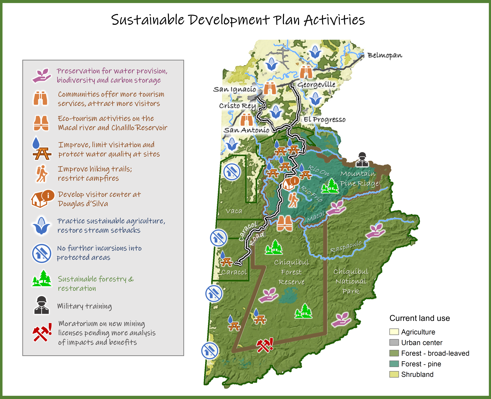
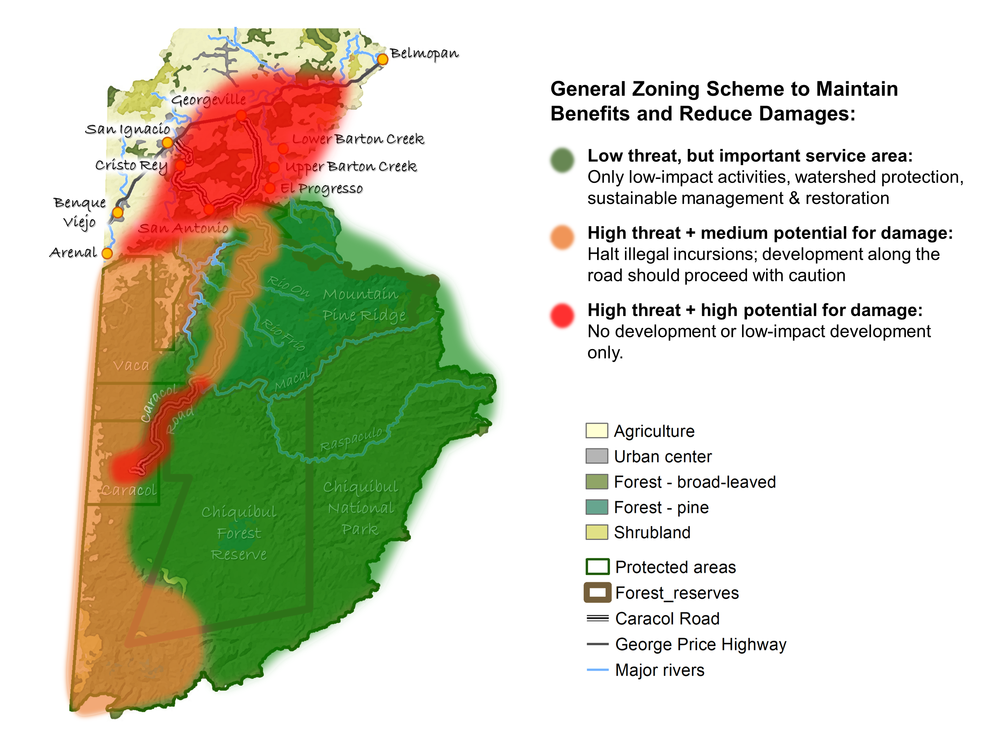
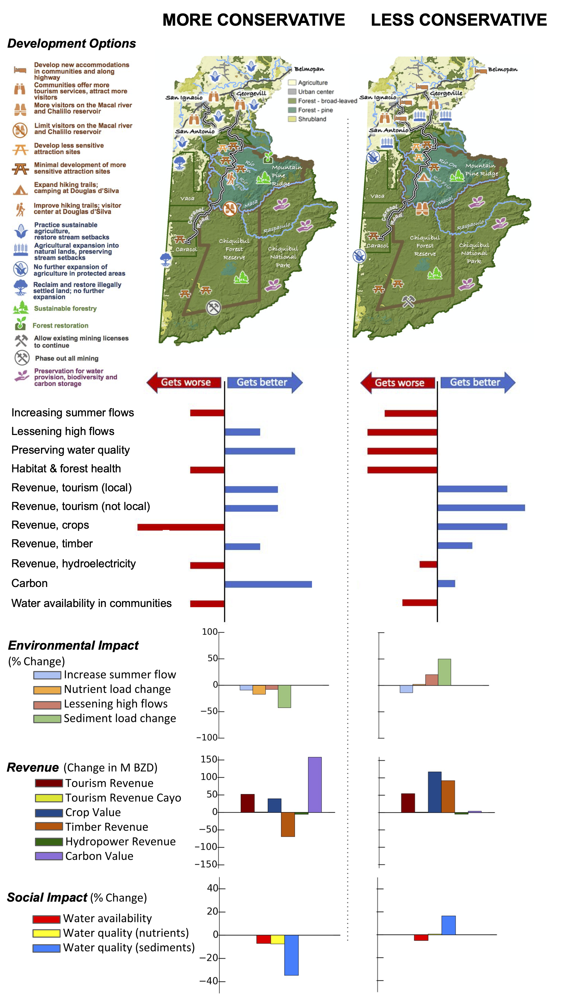

The fundamental goal of the Sustainable Development Plan is to facilitate the improved management of ecosystems in the CMCC so as to maintain their integrity while ensuring the delivery of ecosystem service benefits for present and future generations of Belizeans and the global community.
The aims of the SDP are threefold: (i) to focus management activities that are already being undertaken, ensuring these are integrated; (ii) to highlight additional activities and actions that could be undertaken to help meet the challenge of ensuring a sustainable future; and (iii) to provide a roadmap for the phased implementation of a governance structure to ensure its success.
The result is a vision for a vibrant region where healthy ecosystems support — and are supported by — thriving local communities and a prosperous economy.
This is a brief overview of the highlights of the CMCC Sustainable Development Plan. For more detail, please see the full plan, available for download here
A Vision for Sustainable Development to 2035

Short-term strategy (up to 5 years - 2025)
Paving the way: improvement of the main recreation and tourism sites and implementation of the governance processes and management plans necessary to make the next steps a success.
Medium-term strategy (6-10 years - 2030)
Implementation and monitoring: New products and services in the tourism, agriculture, education and research sectors are developed, and capacity is increased. Sustainable practices in agriculture and forestry are progressing.
Long-term strategy (11-15 years - 2035)
Cementing the vision: All protected areas are effectively managed allowing both the protection of habitats at risk and the development of nature-based activities. Agriculture and wild product harvesting practices are sustainable. A long-term inclusive governance framework is in place along with sustainable financing mechanisms.
Implementation of the SDP activities will be guided by the following general zoning scheme, based on an assessment of development pressures and their tradeoffs in terms of environmental, social, and economic impacts.


Case 1
Welcome!
This viewer shows different scenarios for development in the CMCC Region in Belize.
Map controls
Turn layers on and off to explore the data. Hover and click on the map layers for additional information!
The legend will update in the bottom left corner.
Before continuing, please tell us a bit about yourself:
The Buttons
Scenarios Button
This button shows a figure comparing different future scenarios for development in this region and the impact on ecosystem services.
Data Download Button
This button will display links that allow you to download the data files present in this viewer. Click the button to turn the data links on and off.
About Button
This button will take you to a panel where you can find and download additional resources about this project, including reports, method descriptions, and links to additional information.
The Scenario Comparison Panel
The top row in the static figure has land cover maps that show models of possible expansion of the four main development areas we observed for this study: Agriculture, Mining, Tourism, and Timber. The second and third row look at metrics to evaluate how different ecoystem services will change under these development conditions. Below the graph you will find tools to expand the graph for further inspection and for download, as well as some description of some of the services evaluated.
{kind=link}
{kind=link}